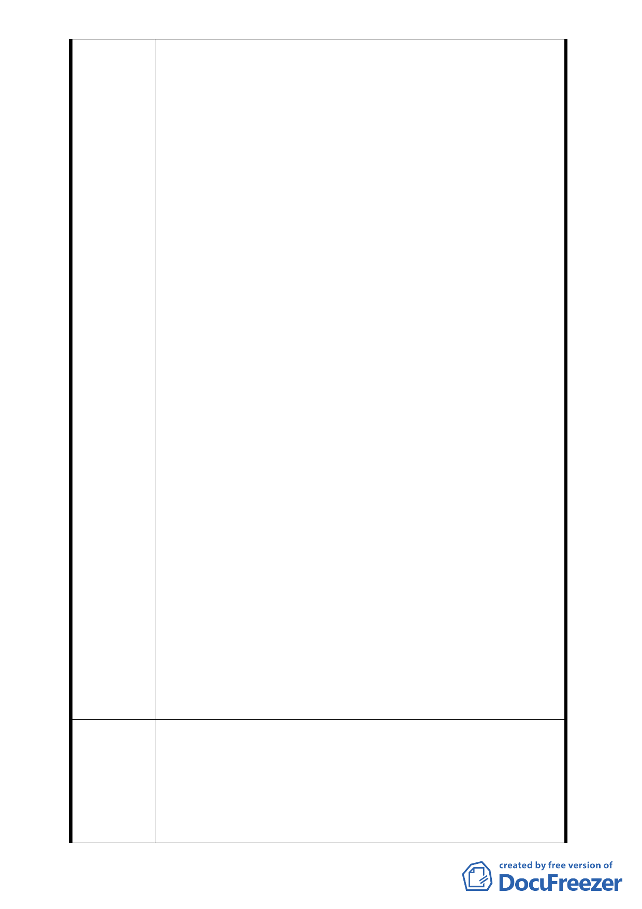

號等筆土地「都市更新事業計畫案同意 書」時，向所有
權人表示該同意書係發起「一般都更」，未明確告知該
同意書係用於申請「促進都市再生 2010 年臺北好好
看」，據此本都市計畫變更案並非所有權人當初簽同意
書所預期目的。
二、合康公司向臺北市政府申請劃定為更新地區前，亦未提
供該都市計畫案之資料「都市計劃書圖」及「都市設計
書圖草案」予各所有權人審閱，也未就計畫內容對所有
權人詳盡解說，顯然合康公司對本案並未善盡誠信告知
之責，導致多數所有權人惶恐、不安，故本案都更將遇
重大阻力，前景難以樂觀。
三、本更新區所有權人125戶原簽「都市更新事業計畫案」同
意書人共87戶，目前已多人依民法第88條主張意思表示
錯誤，申請撤銷該同意書，故本案同意人數已逐日遞減
中。
四、本變更都市計畫案之法令依據都市計畫法第27條第1項第
4款、都市更新條例第6、8條，其前提應由所有權人主動
提出，臺北市政府才據以辦理都市計畫變更；目前已知
本案都市計劃變更案係合康公司誤導所有權人而提出，
並非所有權人已有共識後之共同意願。
五、本案申請單位(合康公司)實收資本額為8千8百萬元，而
本案總開發經費約41.56億，依公司法第2條第1項第4款
規定：「股份有限公司，股東就其所認股份，對公司負
其責任之公司」；故本案如都市計畫變更案通過，爾後
進行都更改建時，若合康公司拆屋後資金無著被迫停
工，依法合康公司僅須就其公司登記之實收資本額負其
責任，則將造成後續重大社會問題，不得不慎。
六、本案申請單位(合康公司)召集之會議將不同意之所有權
人排除在外，而民法第 765 條明定：「所有人，於法令
限制範圍內，得自由使用、收益、處分其所有物，並排
除他人之干涉。」另中華民國憲法第十五條明文規定：
「人民之財產權應予保障」，故本案如不尊重所有權人
的反對聲音而冒然實施，將依法訴究並抗爭到底。
一、建議位置不同意變更為第3種住宅區(特），請維持原第3
種住宅區。
建 議 辦 法 二、建請台北市都市計畫委員會、台北市都市更新處、台北
市政府都市發展局等單位於審查本案時，應請合康公司
另行出具明文記載目的為參加「促進都 市再生2010年臺
北好好看」之所有權人同意書以符實際，因「促進都市
- 22 -